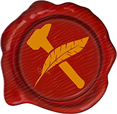

Habilidades Marciais
Em crônicas de Launari, você cria seu personagem da maneira que quiser, utilizando habilidades que serão disponibilizadas ao se passar de nível. Essas habilidades pedem por pré-requisitos que precisam ser alcançados para poderpara que possa utilizar a habilidade.
As habilidades que requerem o uso da arma, significa que só pode ser utilizada com aquela arma, você não conseguirá utilizar uma habilidade de Punhal com uma arma de Haste mesmo se tiver um Punhal na sua cintura. No caso de Dupla Empunhadura, se você possui um Punhal em uma mão e uma Espada na outra, a Habilidade só será ativada com o Punhal e somente causará o dano do Punhal.
Uma habilidade evolutiva possui numerais romanos após o seu nome, isso quer dizer que quanto mais você investir nela, melhor ela vai ficar. Se você investir em uma habilidade como Ataque Sorrateiro I e a evoluir para Ataque Sorrateiro II, a habilidade passa a se tornar uma só, fazendo com que a utilize em sua forma mais avançada, abrindo um espaço para escolher uma nova habilidade.
Habilidades como Grito de Batalha, requerimento paraque é requerimento para grito de guerra, são essencialmente habilidades diferentes, logo uma não substitui a outra, te permitindo usar ambas.
Habilidades Marciais de 1º nível
|
Agilidade Custo: - Resfriamento: - Duração: - Requisito: +1 Destreza Aumenta a velocidade de movimento de seu personagem em 1m para cada ponto de ação ou reação utilizado para movimentação. |
Ataque Sorrateiro I Custo: - Resfriamento: - Duração: - Requisito: +1 Destreza, e Punhal ou Armas de Arremesso Ao acertar um ataque feito com vantagem contra um alvo, adicione 1d6 de dano de arma ao dano causado. Esse ataque pode ser realizado apenas uma vez por turno. |
Atirador Custo: - Resfriamento: - Duração: - Requisito: Ataques à Distância Ao realizar um ataque à distância, adicione +2 em seu bônus de acerto. Esse bônus só é adicionado a ataques feitos à distância. |
Avanço Tático Custo: 3 PA Resfriamento: 1 turno Duração: - Requisito: +1 Destreza ou Força Realize um avanço rápido contra um alvo que possa ver, você se moverá 5m em sua direção. Se este ataque acertar o alvo, você causa 1d4 de dano de arma e inicia uma provocação. Essa provocação tem duração de 1 turno se tiver sucesso. |
Contra-Ataque I Custo: 2 PR Resfriamento: - Duração: - Requisito: +1 Destreza ou Força Quando um inimigo errar um ataque contra você, utilize sua reação para atacá-lo de volta. Este contra-ataque só pode ser realizado se o inimigo estiver no alcance de sua arma. |
Defesa Rápida Custo: Ativação do escudo Resfriamento: - Duração: - Requisito: Escudo Permite a ativação de defesa com escudo utilizando sua reação, quando sofrer um ataque inimigo. Para esta habilidade funcionar, seu escudo precisa consumir 2 ou menos PR. |
Domador I Custo: - Resfriamento: 8 horas Duração: - Requisito: +1 Vigor Capture e domestique uma criatura do tipo Animal de tamanho médio ou inferior. Essa criatura obedece comandos básicos como: Atacar, Mover-se, Desviar e Defender. Essa criatura o segue até sua morte ou até que utilize a habilidade novamente em uma outra criatura. Criaturas nadadoras e voadoras devem ter tamanho pequeno ou inferior. |
Duelista Custo: - Resfriamento: - Duração: - Requisito: Arma de Uma Mão Ao utilizar apenas uma arma de Uma Mão, adicione +2 ao dano dos ataques da arma. Essa habilidade pode ser ativada com a utilização de escudos na mão secundária. |
Empurrar Custo: 2 PA Resfriamento: - Duração: - Requisito: +1 Destreza ou Força Realize um ataque contra um alvo que pode ver ao seu alcance. O alvo deverá ter sucesso em um teste de Resistência ou será lançado 3m em uma direção a sua escolha. Esta habilidade não causa dano. |
Fora de Compasso Custo: - Resfriamento: - Duração: - Requisito: Dupla Empunhadura Ao realizar um ataque de dupla empunhadura, você pode atacar alvos diferentes, em vez de um único alvo, que estejam ao alcance de sua arma, quando tomar sua ação de ataque. |
Grito de Batalha Custo: 2 PA Resfriamento: 2 turnos Duração: 2 turnos Requisito: +1 Vigor e +1 Força Solte um grito enlouquecido e ensurdecedor. Todas as criaturas a 3m de distância de você, deverão ter sucesso em um teste de Resistência ou ficarão assustadas pela duração da habilidade. |
Interceptar Custo: 2 PR Resfriamento: - Duração: - Requisito: Escudo Intercepte um ataque inimigo realizado contra um aliado ao seu alcance. Ao fazê-lo, adicione a defesa bônus de seu escudo na defesa de seu aliado, possivelmente bloqueando o ataque. |
Marca do Caçador Custo: 3 PA Resfriamento: 2 turnos Duração: 30 minutos Requisito: - Marque o cheiro de uma criatura que possa ver em até 30m de distância. Durante a duração da marca, você poderá rastrear essa criatura com extrema exatidão. |
Olhos de Águia Custo: - Resfriamento: - Duração: - Requisito: Ataques à Distância Sua visão se torna mais nítida e aguçada. O alcance normal de seus ataques à distância aumenta em 10m. |
Sufocar Custo: 3 PA Resfriamento: - Duração: - Requisito: +1 Destreza ou Força Envolva um alvo ao seu alcance em um mata leão, esse alvo deve ter sucesso em um teste de resistência ou receber o efeito de agarrado. Enquanto estiver sufocando, o alvo recebe 1d4 de dano contundente por turno. |
T.O.P. I (Tecnologia Omnidirecional Protetiva) I Custo: 4 PA Resfriamento: 5 turnos Duração: 3 turnos Requisito: +1 Destreza e +1 Conhecimento Crie uma barreira de energia eletrostática utilizando uma pequena bobina de Tesla que carrega em sua mochila nas costas. Durante a duração, um domo de energia o cerca em uma área de 3m, absorvendo 2 de dano. |
Habilidades Marciais de 3º nível
|
Adrenalina Custo: - Resfriamento: 5 turnos Duração: - Requisito: +2 Vigor Um surto de adrenalina corre pelo seu corpo. No turno de ativação da habilidade, receba 2 pontos de ação adicionais. Porém no próximo turno você terá 2 pontos de ação a menos, devido a fadiga causada pelo surto de adrenalina. |
Aparar Custo: 2 PR Resfriamento: 1 turno Duração: 3 turnos Requisito: +2 Destreza ou Força Ao ser atingido por um ataque inimigo, utilize suas armas ou escudo para aparar ou redirecionar o golpe. Ao fazê-lo, adicione a sua defesa o valor de seu bônus de treinamento, possivelmente evitando o ataque inimigo. |
Armadura de Espinhos I Custo: - Resfriamento: - Duração: - Requisito: +2 Vigor Uma aura cobre seu corpo, moldando o véu do éter para se assemelhar com pequenos espinhos ao redor de sua armadura. Toda vez que receber um ataque corpo-a-corpo, o inimigo recebe 1d4 de dano de arma refletido. |
Ataque Atordoante Custo: 2 PA Resfriamento: 1 turno Duração: 1 turno Requisito: +2 Destreza ou Força, e uma Arma Contundente Desfira um ataque na cabeça de seu inimigo, causando dano de arma. O alvo deverá ter sucesso em um teste de resistência ou ficará atordoado pela duração. |
Avanço Violento Custo: 2 PA Resfriamento: 1 turno Duração: - Requisito: +2 Destreza ou Força e uma Arma Perfurante Realize um avanço rápido contra um alvo que possa ver, você se moverá 3m em sua direção. Se este ataque acertar o alvo, você causa dano de arma. |
Berserker I Custo: - Resfriamento: 8 turnos Duração: 2 turnos Requisito: +2 Vigor Quando sua saúde chegar a 0, em vez de cair ao chão inconsciente, uma raiva barbárica enche seu corpo de adrenalina, o fazendo ignorar a dor e continuar de pé lutando pela duração da habilidade. |
Derrubar Custo: 2 PA Resfriamento: 1 turno Duração: - Requisito: +2 Destreza ou Força Desfira um ataque que tira o inimigo de balanço, possivelmente em suas pernas. O alvo deverá ter sucesso em um teste de Resistência ou cairá ao chão. |
Desarmar Custo: 2 PA Resfriamento: 2 turnos Duração: - Requisito: +2 Destreza ou Força Desfira um ataque contra a mão ou arma do inimigo. O alvo deverá ter sucesso em um teste de Resistência ou derrubará sua arma ao chão. Essa habilidade funciona contra escudos. |
Defesa Eficiente Custo: - Resfriamento: - Duração: - Requisito: +2 Destreza ou Força, e Escudo Você se tornou mais habilidoso no uso de seu escudo. O custo da ativação de defesa de escudo é reduzido em 1 ponto. |
Desviar Projéteis Custo: - Resfriamento: 6 turnos Duração: - Requisito: +2 Destreza ou Força Ao ser acertado por um projétil, seu corpo se prepara para o próximo ataque. O próximo ataque à distância realizado contra você, será automaticamente bloqueado. |
Disparo Estilhaçante Custo: 3 PA Resfriamento: 2 turnos Duração: - Requisito: +2 Destreza ou Força e Arma a Distância Atire uma munição que se estilhaça ao impacto, disparando fragmentos em uma área de 2m ao redor do alvo. Qualquer alvo dentro da área sofrerá dano de arma. |
Engenharia I Custo: 3 PA Resfriamento: 1 turno Duração: 1 hora Alcance: 30m Requisito: +2 Destreza +1 Conhecimento Você aprendeu a construir, armar e controlar uma pequena turreta de combate. Essa turreta ataca 1 vez por turno, no início de seu turno, enquanto estiver ativa, utilizando um ataque físico de munição que causa 1d8 de dano perfurante. Se atacada diretamente, a construção da turreta providencia 10 de defesa e 10 de saúde. Você pode armar essa turreta a até 5m de distância de você. Se destruída, você pode reconstruí-la com um descanso curto. |
Munição Incendiária I Custo: 3 PA Resfriamento: 2 turnos Duração: 2 turnos Requisito: +2 Destreza e Arma de Fogo Carregue e Dispare uma munição explosiva. Ao acertar o alvo a munição explode causando dano de arma e ateando fogo ao alvo. O alvo incendiado sofre 1d4 de dano de fogo durante a duração da habilidade. |
Puxar I Custo: 2 PA Resfriamento: - Duração: - Alcance: 3m Requisito: +2 Destreza ou Força e Armas de Hastes ou Correntes. Lance sua arma em direção a um alvo no alcance, causando dano de arma. Com um movimento rápido, puxe-o de volta para você. |
Sangue nos Olhos Custo: - Resfriamento: 10 turnos Duração: - Requisito: +2 Força Ao ser acertado com um ataque crítico, você é consumido por uma raiva imensa. O seu próximo ataque será considerado um crítico automático. |
Turbilhão Custo: 4 PA Resfriamento: 1 turno Duração: - Requisito: +2 Destreza ou Força e Arma de duas Mãos Ataque todos os inimigos que estiverem a uma distância corpo-a-corpo de você com um golpe giratório. Todos os inimigos que tiverem sua defesa sobrepujada sofrerão dano de arma. |
Habilidades Marciais de 5º nível
|
Assassinato I Custo: 4 PA Resfriamento: 4 turnos Duração: - Requisito: +3 Destreza e Arma Perfurante Desfira um ataque letal no ponto fraco de seu inimigo. Ao acertar um alvo que esteja com metade da saúde ou menos, seu ataque será considerado um acerto crítico. |
Ataque Rápido Custo: - Resfriamento: 2 turnos Duração: - Requisito: Arma de Uma Mão Realize um ataque rápido, diminuindo o custo da sua próxima ação de ataque em 1 ponto de ação. |
Ataque Sorrateiro II Custo: - Resfriamento: - Duração: - Requisito: Ataque Sorrateiro I Ao acertar um ataque feito com vantagem contra um alvo, adicione 2d6 de dano de arma ao dano causado. Esse ataque pode ser realizado apenas uma vez por turno. |
Barragem I Custo: 2 PA Resfriamento: 2 turnos Duração: - Requisito: +3 Destreza e Dupla Empunhadura Ataque 3 vezes em vez de duas com seu ataque de dupla empunhadura. Apenas o primeiro ataque adiciona o seu modificador de dano. |
Corpo de Ferro Custo: - Resfriamento: - Duração: - Requisito: +3 Vigor Uma aura de ferro cobre seu corpo, absorvendo parte do dano que recebe. Você Ignora um valor de dano equivalente ao seu Vigor. |
Despedaçar I Custo: 3 PA Resfriamento: 2 turnos Duração: 1 turno Requisito: +3 Força e Arma Contundente Desfira um ataque poderoso quebrando as defesas de seu inimigo. Durante a duração da habilidade, o alvo terá sua defesa reduzida em 2 pontos. |
Domador II Custo: - Resfriamento: 8 horas Duração: - Requisito: Domador I Capture e domestique uma criatura do tipo Animal de tamanho médio ou inferior. Essa criatura obedece comandos básicos como: Atacar, Mover-se, Desviar e Defender. Essa criatura o segue até sua morte ou até que utilize a habilidade novamente em uma outra criatura. |
Fúria I Custo: 2 PA Resfriamento: 2 turnos Duração: 3 turnos Requisito: +3 Vigor Você entra em um estado de fúria cega, atacando violentamente seus inimigos. Pela duração da habilidade, todos os seus ataques serão feitos com vantagem, porém você sofrerá desvantagem para resistir a efeitos mágicos. |
Grito de Guerra I Custo: 3 PA Resfriamento: 4 turnos Duração: 1 turno Requisito: +3 Vigor e Grito de Batalha Solte um grito enlouquecido e ensurdecedor. Todas as criaturas a 3m de distância de você, deverão ter sucesso em um teste de Sagacidade ou ficarão distraídas pela duração da habilidade. |
Pancada de Escudo I Custo: - Resfriamento: 1 turno Duração: 1 turno Requisito: +3 Destreza ou Força e Escudo Ao utilizar a ativação de defesa do escudo, desfere como parte da ação um ataque contra um alvo na distância corpo-a-corpo, causando 1d4 de dano contundente. O alvo deverá ter sucesso em um teste de Resistência ou ficar atordoado pela duração da habilidade. |
Provocação I Custo: 3 PA Resfriamento: 4 turnos Duração: 1 turno Alcance: 10m Requisito: +3 Vigor e Grito de Batalha Provoque seus inimigos com xingamentos e ofensas. Provoque até dois inimigos que possam lhe ouvir no alcance, eles devem ter sucesso em um teste de Sagacidade ou serão provocados pela duração da habilidade. |
Retaliação Custo: 2 PR Resfriamento: 2 turnos Duração: - Requisito: +3 Destreza ou Força Ao adquirir essa habilidade você estará sempre pronto para retaliar ataques inimigos. Ao ser acertado por um ataque inimigo, você pode utilizar sua reação para atacá-lo de volta, se estiver ao seu alcance. Esse ataque é feito com vantagem. |
Ricochete I Custo: 2 PA Resfriamento: 1 turno Duração: - Alcance: 10m do alvo original Requisito: +3 Destreza ou Força e Ataques à Distância Dispare um projétil em velocidade extrema. Esse projétil atravessará o seu alvo e atingirá o alvo mais próximo no alcance da habilidade, causando dano de arma em ambos os alvos. |
Sangramento I Custo: 2 PA Resfriamento: 2 turnos Duração: 3 turnos Requisito: +3 Destreza ou Força Ataque um fraco de seu alvo, causando sangramento leve. Esse sangramento causa 1d4 de dano necrótico todo início de turno do alvo pela duração da habilidade. |
Sede de Sangue Custo: - Resfriamento: 3 turnos Duração: - Requisito: +3 Vigor ou Força Dispare um projétil em velocidade extrema. Esse projétil atravessará o seu alvo e atingirá o alvo mais próximo no alcance da habilidade, causando dano de arma em ambos os alvos. |
T.O.P. II (Tecnologia Omnidirecional Protetiva) II Custo: 3 PA Resfriamento: 5 turnos Duração: 4 turnos Requisito: +3 Destreza, +2 Conhecimento, e T.O.P. I. Crie uma barreira de energia eletrostática utilizando uma pequena bobina de Tesla que carrega em sua mochila nas costas. Durante a duração, um domo de energia o cerca em uma área de 3m, absorvendo 4 de dano. |
Habilidades Marciais de 7º nível
|
Armadura de Espinhos II Custo: - Resfriamento: - Duração: - Requisito: Armadura de Espinhos I Uma aura cobre seu corpo, moldando o véu do éter para se assemelhar com pequenos espinhos ao redor de sua armadura. Toda vez que receber um ataque corpo-a-corpo, o inimigo recebe 2d4 de dano de arma refletido. |
Ataque Sorrateiro III Custo: - Resfriamento: - Duração: - Requisito: Ataque Sorrateiro II Ao acertar um ataque feito com vantagem contra um alvo, adicione 3d6 de dano de arma ao dano causado. Esse ataque pode ser realizado apenas uma vez por turno. |
Atirador de Elite I Custo: 2 PA Resfriamento: 6 turnos Duração: - Requisito: +4 Destreza e Ataques à Distância Controle sua respiração, crie um apoio estável e atire. Seu disparo persegue o alvo, o acertando mesmo atrás de cobertura, ignorando a defesa e resistência do alvo. |
Berserker II Custo: - Resfriamento: 8 turnos Duração: 4 turnos Requisito: Berserker I Quando sua saúde chegar a 0, em vez de cair ao chão inconsciente, uma raiva barbarica enche seu corpo de adrenalina, o fazendo ignorar a dor e continuar de pé lutando pela duração da habilidade. |
Combate Montado Custo: 2 PA Resfriamento: 1 turno Duração: - Requisito: +4 Destreza ou Força e Uma Montaria Enquanto montado, corra pelo menos 5m na direção do alvo. Se o ataque acertar, adicione 1d8 de dano da arma. O alvo deverá ter sucesso em um teste de Resistência ou cair ao chão. |
Contra-Ataque II Custo: 1 PR Resfriamento: - Duração: - Requisito: +1 Destreza ou Força Quando um inimigo errar um ataque contra você, utilize sua reação para atacá-lo de volta. Este contra-ataque só pode ser realizado se o inimigo estiver no alcance de sua arma. |
Domador III Custo: - Resfriamento: 8 horas Duração: - Requisito: Domador II Capture e domestique uma criatura do tipo Animal de tamanho Grande ou inferior. Essa criatura obedece comandos básicos como: Atacar, Mover-se, Desviar e Defender. Essa criatura o segue até sua morte ou até que utilize a habilidade novamente em uma outra criatura. |
Emboscada Custo: 3 PA Resfriamento: 2 turnos Duração: - Alcance: 10m Requisito: +4 Destreza Desapareça em uma nuvem de sombras e apareça nas costas de um alvo no alcance da habilidade. Seu próximo ataque contra o alvo será feito com vantagem. |
Engenharia II Custo: 2 PA Resfriamento: 1 turno Duração: 1 hora Alcance: 30m Requisito: +2 Destreza +1 Conhecimento Você aprendeu a construir, armar e controlar uma pequena turreta de combate. Essa turreta ataca 1 vez por turno, no início de seu turno, enquanto estiver ativa, utilizando um ataque físico de munição que causa 2d8 de dano perfurante. Se atacada diretamente, a construção da turreta providencia 12 de defesa e 20 de saúde. Você pode armar essa turreta a até 5m de distância de você. Se destruída, você pode reconstruí-la com um descanso curto. |
Frenesi I Custo: 4 PA Resfriamento: 6 turnos Duração: 4 turnos Requisito: +4 Vigor ou Força Entre em frenesi, seus músculos se contraem e sua fúria se torna incontrolável. Durante a duração da habilidade você ganha resistência a todos os tipos de dano, porém torna-se incapaz de utilizar habilidades físicas ou mágicas. |
Grito de Guerra II Custo: 3 PA Resfriamento: 4 turnos Duração: 2 turnos Requisito: Grito de Guerra I Solte um grito enlouquecido e ensurdecedor. Todas as criaturas a 3m de distância de você, deverão ter sucesso em um teste de Sagacidade ou ficarão distraídas pela duração da habilidade. |
Munição Incendiária II Custo: 3 PA Resfriamento: 2 turnos Duração: 2 turnos Requisito: +4 Destreza e Arma de Fogo Carregue e Dispare uma munição explosiva. Ao acertar o alvo a munição explode causando dano de arma e ateando fogo ao alvo. O alvo incendiado sofre 3d4 de dano de fogo durante a duração da habilidade. |
Pancada de Escudo II Custo: - Resfriamento: 1 turno Duração: 1 turno Requisito: Pancada de Escudo I Ao utilizar a ativação de defesa do escudo, desfere como parte da ação um ataque contra um alvo na distância corpo-a-corpo, causando 2d4 de dano contundente. O alvo deverá ter sucesso em um teste de Resistência ou ficar atordoado pela duração da habilidade. |
Pés Ligeiros Custo: - Resfriamento: - Duração: - Requisito: +4 Destreza Você se torna rápido e esguio. O custo para a ativação da ação de esquiva é reduzido em 1 ponto. Você pode realizar a ação de esquiva com sua reação. |
Puxar II Custo: 2 PA Resfriamento: - Duração: 1 turno Alcance: 3m Requisito: Puxar I Lance sua arma em direção a um alvo no alcance, causando dano de arma. Com um movimento rápido, puxe-o de volta para você. O alvo deverá ter sucesso em um teste de Resistência ou ficará atordoado pela duração da habilidade. |
Retirada Custo: 2 PA Resfriamento: 4 turnos Duração: 4 turnos Requisito: +4 Destreza Corra pelo campo de batalha desviando de todos os ataques direcionados a você. Pela duração da habilidade você pode movimentar-se sem causar ataques de oportunidade. |
Habilidades Marciais de 9º nível
|
Armadura de Espinhos III Custo: - Resfriamento: - Duração: - Requisito: Armadura de Espinhos II Uma aura cobre seu corpo, moldando o véu do éter para se assemelhar com pequenos espinhos ao redor de sua armadura. Toda vez que receber um ataque corpo-a-corpo, o inimigo recebe 3d4 de dano de arma refletido. |
Assassinato II Custo: 2 PA Resfriamento: 3 turnos Duração: - Requisito: +5 Destreza e Assassinato I Desfira um ataque letal no ponto fraco de seu inimigo. Ao acertar um alvo que esteja com metade da saúde ou menos, seu ataque será considerado um acerto crítico. |
Ataque Sorrateiro IV Custo: - Resfriamento: - Duração: - Requisito: Ataque Sorrateiro III Ao acertar um ataque feito com vantagem contra um alvo, adicione 4d6 de dano de arma ao dano causado. Esse ataque pode ser realizado apenas uma vez por turno. |
Atirador de Elite II Custo: 2 PA Resfriamento: 3 turnos Duração: - Requisito: Atirador de Elite I Controle sua respiração, crie um apoio estável e atire. Seu disparo persegue o alvo, o acertando mesmo atrás de cobertura, ignorando a defesa e resistência do alvo. |
Barragem II Custo: 2 PA Resfriamento: 1 turno Duração: - Requisito: Barragem I Ataque 3 vezes em vez de duas com seu ataque de dupla empunhadura. Apenas o primeiro ataque adiciona o seu modificador de dano. |
Despedaçar II Custo: 2 PA Resfriamento: 2 turnos Duração: 2 turnos Requisito: Despedaçar I Desfira um ataque poderoso quebrando as defesas de seu inimigo. Durante a duração da habilidade, o alvo terá sua defesa reduzida em 2 pontos. |
Domador IV Custo: - Resfriamento: 8 horas Duração: - Requisito: Domador III Capture e domestique uma criatura do tipo Animal, Monstruosidade ou Aberração de tamanho Grande ou inferior. Essa criatura obedece comandos básicos como: Atacar, Mover-se, Desviar e Defender. Essa criatura o segue até sua morte ou até que utilize a habilidade novamente em uma outra criatura. |
Engenharia III Custo: 2 PA Resfriamento: 1 turno Duração: 1 hora Alcance: 30m Requisito: Engenharia II Você aprendeu a construir, armar e controlar duas pequenas turretas de combate. Essas turretas atacam 1 vez por turno, no início de seu turno, enquanto estiver ativa, utilizando um ataque físico de munição que causa 3d8 de dano perfurante. Se atacada diretamente, a construção da turreta providencia 13 de defesa e 25 de saúde. Você pode armar essa turreta a até 5m de distância de você. Se destruída, você pode reconstruí-la com um descanso curto. |
Fúria II Custo: 2 PA Resfriamento: 2 turnos Duração: 6 turnos Requisito: Fúria I Você entra em um estado de fúria cega, atacando violentamente seus inimigos. Pela duração da habilidade, todos os seus ataques serão feitos com vantagem, porém você sofrerá desvantagem para resistir a efeitos mágicos. |
Frenesi II Custo: 4 PA Resfriamento: 6 turnos Duração: 6 turnos Requisito: Frenesi I Entre em frenesi, seus músculos se contraem e sua fúria se torna incontrolável. Durante a duração da habilidade você ganha resistência a todos os tipos de dano, porém torna-se incapaz de utilizar habilidades físicas ou mágicas. |
Provocação II Custo: 3 PA Resfriamento: 1 turno Duração: 1 turno Alcance: 10m Requisito: Provocação I Provoque seus inimigos com xingamentos e ofensas. Provoque até 3 inimigos que possam lhe ouvir no alcance, eles devem ter sucesso em um teste de Sagacidade ou serão provocados pela duração da habilidade. |
Quebra-Reinos Custo: 4 PA Resfriamento: 3 turnos Duração: 1 turno Alcance: 10m Requisito: +5 Força Bata com sua arma no chão, causando um tremor de terra em uma linha do alcance da habilidade vindo da origem do ataque. Todos os inimigos na área sofrem 2x o dano de arma e devem ter sucesso em um teste de Resistência ou cairão ao chão. Movimentar-se na área afetada pelo ataque custa o dobro de pontos. |
Rasga-Céus Custo: 2 PA Resfriamento: 3 turnos Duração: - Alcance: 10m Requisito: +5 Destreza Impulsione-se para o alto, saltando o alcance da habilidade no ar. Enquanto no ar você pode se manobrar 5m em qualquer direção. Cair ao chão causa um tremor de impacto de 5m de raio, todos os inimigos dentro da área deverão ter sucesso em um teste de resistência ou cairão ao chão. Se você cair diretamente em cima de um alvo, adicione 4d8 ao dano de arma. |
Ricochete II Custo: 2 PA Resfriamento: 1 turno Duração: - Alcance: 15m do alvo original Requisito: Ricochete I Dispare um projétil em velocidade extrema. Esse projétil atravessará o seu alvo e atingirá até 2 alvos mais próximos no alcance da habilidade, causando dano de arma em ambos os alvos. |
Sangramento II Custo: 2 PA Resfriamento: 2 turnos Duração: 4 turnos Requisito: Sangramento I Ataque um fraco de seu alvo, causando sangramento leve. Esse sangramento causa 2d4 de dano necrótico todo início de turno do alvo pela duração da habilidade. |
T.O.P. III (Tecnologia Omnidirecional Protetiva) III Custo: 3 PA Resfriamento: 5 turnos Duração: 5 turnos Requisito: T.O.P. (Tecnologia Omnidirecional Protetiva) II Crie uma barreira de energia eletrostática utilizando uma pequena bobina de Tesla que carrega em sua mochila nas costas. Durante a duração, um domo de energia o cerca em uma área de 3m, absorvendo 8 de dano. |
Habilidades Mágicas
Algumas possuem afinidade elemental pré-definida, isso não quer dizer que ela custa mais pontos para serem ativadas caso você não possua essa afinidade, quer apenas dizer que o efeito dessas habilidades simbolizam o elemento que está descrito, e dessa forma é imutável.
As habilidades que descrevem o uso de magia elemental primordial, utilizam o elemento de sua afinidade como base para a conjuração, exemplo, se você possui afinidade para fogo e conjura um Canhão Arcano, esse disparo é feito com o elemento Fogo, claro, você pode alterar o elemento no momento que lançar a magia, porém terá um custo adicional ao fazê-lo.
Seu potencial mágico, as magias que entoa e a manipulação da matéria são derivados do véu de éter, e sua capacidade de utilizá-lo de forma efetiva o condiciona a realizar conquistas únicas.
Os estudiosos do éter categorizam a manipulação da magia em 10 vertentes, ou escolas, cada uma dessas vertentes/escolas simboliza uma maneira única de manipulação e materialização do éter, chamamos essas diferenças de Singularidade. As vertentes/escolas são as seguintes:
| Vertente | Singularidades | Caótica | Manifestações etéreas inconsistentes, perigosas e poderosas. | Elemental | Manifesta o éter em um elemento primordial. | Encantamento | Manipula o éter ao redor de um equipamento ou indivíduo, influenciando suas capacidades. | Ilusão | Manifesta o éter em refrações de luz e sombras. | Invocação | Canaliza os caminhos etéreos para interagir criaturas de outros planos. | Maldição | Danifica ou destrói ligamentos etéreos. | Mutação | Transforma o éter contido em uma criatura ou objeto. | Proteção | Manipula o éter no ambiente, criando barreiras e outros efeitos defensivos. | Restauração | Reconstrói ligamentos etéreos danificados ou destruídos. | Sinestesia | Influencia o éter, criando efeitos emocionais e manipulativos. |
Habilidades Mágicas de 1º nível
|
Absorver Elemento Magia de Proteção Custo: 2 PR Usos: - Duração: 1 turno Requisito: +1 Conhecimento Levanta uma barreira elemental ao seu redor no momento de impacto do ataque. Essa barreira absorverá metade do dano elemental causado. |
Alarme Magia de Proteção Custo: 6 PA Usos: 2 Duração: 8 horas Alcance: 10m de raio Requisito: +1 Conhecimento ou Influência Crie um perímetro com área do tamanho do alcance da habilidade que apenas pessoas selecionadas por você podem passar. Qualquer criatura não selecionada que entrar no perímetro, dispara um alarme audível ou mental (sua escolha). |
Alteração I Magia de Mutação Custo: 6 PA Usos: - Duração: - Requisito: +1 Conhecimento ou Influência Altera a forma de um objeto inanimado para outro objeto inanimado de tamanho e valor similares. Essa magia geralmente é utilizada para criação de estátuas ou outros monumentos, mas existem aqueles que a utilizam com mais criatividade. |
Canhão Arcano I Magia Elemental Custo: 2 PA Usos: - Duração: - Alcance: 30m Requisito: +1 Conhecimento ou Influência Dispare uma rajada de sua afinidade elemental (ou modificada), causando 1d10 de dano elemental e aplicando um efeito elemental de alvo único. |
Conexão Telepática Magia de Sinestesia Custo: 2 PA Usos: 2 Duração: 10 minutos Alcance: 50m Requisito: +1 Influência Crie uma conexão telepática com uma pessoa que esteja no alcance da habilidade. Enquanto conectados, vocês podem trocar mensagens mentais pela duração da habilidade. Você precisa saber o nome do alvo para que esta habilidade funcione. |
Conjuração I Magia de Ilusão Custo: 4 PA Usos: - Duração: 10 minutos Requisito: +1 Conhecimento ou Influência Crie em sua mão um objeto mágico translúcido que você já tenha visto ou possui os diagramas. Alternativamente, você pode criar armas ou munições de requerimento +1 que você possa utilizar. Itens, armas ou munições criadas desaparecem após a duração da habilidade. |
Compreender Idiomas Magia de Sinestesia Custo: 2 PA Usos: 2 Duração: 1 hora Requisito: +1 Influência Durante a duração você pode traduzir documentos e falar qualquer idioma existente. |
Curar Ferimentos I Magia de Restauração Custo: 4 PA Usos: 3 Duração: - Requisito: +1 Conhecimento ou Influência Canalize um feixe de energia lunar na palma de sua mão. Ao tocar uma criatura ferida, a energia lunar começa a reparar os ferimentos, restaurando 2d4 pontos de saúde do alvo. |
Detectar Magia Magia de Sinestesia Custo: 2 PA Usos: 2 Duração: 10 minutos Alcance: 10m Requisito: +1 Conhecimento ou Influência Cria uma aura sensível a efeitos mágicos ao seu redor no alcance da habilidade. Durante a duração da habilidade, você pode detectar todos os efeitos mágicos da área, sabendo exatamente que tipo de magia foi utilizada no local. |
Disfarce Mágico Magia de Ilusão Custo: 3 PA Usos: - Duração: 1 hora Requisito: +1 Conhecimento ou Influência Altera sua aparência física e ou suas vestimentas da forma que lhe for conveniente. Essa magia é uma ilusão que pode ser detectada por aqueles que o tocarem ou tiverem sucesso em um teste de Vontade. Você pode mudar sua aparência para alguém maior ou menor, porém sua estatura física não muda. |
Encantamento Primordial Magia de Encantamento Custo: 3 PA Usos: 2 Duração: 1 hora Alcance: 5m Requisito: +1 Conhecimento ou Influência Imbue uma arma no alcance da habilidade, com afinidade elemental pela duração da habilidade. Uma arma encantada dessa forma tem seu dano modificado para elemental. Este encantamento pode ser utilizado em escudos, dando resistência ao elemento imbuído durante a ativação da defesa do escudo. Armas e escudos encantados com energia Solar, Lunar ou Fogo, emitem luz fraca em uma distância de 5m. |
Erupção I Magia Elemental Custo: 3 PA Usos: 2 Duração: 10 minutos Alcance: 10m Requisito: +1 Conhecimento ou Influência Cria uma área de 3m de diâmetro no alcance da habilidade, com um efeito elemental primordial de área. Um ataque elemental ou segunda erupção de elemento diferente, pode causar um efeito variante na área. |
Escudo Solar I Magia de Proteção Custo: 2 PR Usos: 3 Duração: 1 turno Alcance: 10m Requisito: +1 Conhecimento Cria um escudo de energia solar ao redor do alvo na área de alcance da habilidade. O alvo afetado pelo escudo tem sua defesa aumentada de acordo com o valor de seu treinamento pela duração da habilidade. |
Falar com Animais Magia de Sinestesia Custo: 2 PA Usos: 2 Duração: 10 minutos Requisito: +1 Influência Pela duração da habilidade, você consegue se comunicar com criaturas naturais. Você consegue falar e entender os animais como se fosse sua língua nativa. |
Falar com os Mortos Magia de Invocação Custo: - Usos: 2 Duração: 10 minutos Requisito: +1 Influência Invoque o fantasma ou dê vida a carcaça da pessoa morta que estiver a 1m de distância de você. Você pode fazer 4 perguntas a esta pessoa, ela responderá de acordo com a relação que tinha com você durante a vida, se tinha alguma. Ela pode ser hostil, indiferente ou prestativa. |
Forma Animal Magia de Mutação Custo: 2 PA Usos: 3 Duração: 1 hora Requisito: +1 Conhecimento Assuma a forma de um animal de tamanho médio ou menor. Durante sua transformação seu movimento aumenta em 1m e adiciona seu valor de conhecimento à sua armadura. Se transformar em uma criatura média terrestre faz sua mordida causar 1d6 + Conhecimento de dano perfurante e pode escolher possuir táticas de matilha ou derrubar (pounce) e sua mordida é considerada uma arma natural. Se escolher ser pequeno, você pode ser uma criatura voadora ou nadadora com um ataque de 1d4 + conhecimento. Nesta forma você pode falar e conjurar magias de primeiro nível. |
Fogo das Fadas Magia Caótica Custo: 4 PA Usos: 3 Duração: 1 minuto Alcance: 10m Requisito: +1 Conhecimento Invoca um pó brilhante mágico no alcance da habilidade com área de 5m. Inimigos pegos nessa área precisam ter sucesso em um teste Vontade ou ter seus corpos cobertos por esse pó. Uma criatura coberta com o pó mágico das fadas sofre todos os ataques com vantagem, tem desvantagem em se esconder, e é revelado se estiver invisível. |
Identificar Magia de Sinestesia Custo: 6 PA Usos: 2 Duração: - Requisito: +1 Conhecimento ou Influência Utiliza magia de sinestesia para identificar um objeto mágico desconhecido. Objetos identificados dessa forma tem todas as propriedades ocultas reveladas. |
Ilusão I Magia de Ilusão Custo: 2 PA Usos: - Duração: 10 minutos Alcance: 10m Requisito: +1 Influência Cria uma pequena ilusão visual, sonora ou odora em um espaço de 1m que possa ver no alcance da habilidade. Durante a duração da habilidade, qualquer um que tentar verificar a ilusão precisará passar por um teste de Vontade. |
Invocar Esqueleto I Maldição Custo: 3 PA Usos: 2 Duração: 10 minutos Requisito: +1 Influência Rasgue uma pequena fenda no plano material, invocando um esqueleto equipado com gládio e um arco curto. Esse esqueleto possui 10 de saúde e 8 de defesa. |
Invocar Familiar Magia de Invocação Custo: 6 PA Usos: 1 Duração: - Requisito: +1 Conhecimento ou Influência Invoca um pequeno espírito que toma a forma de um pequeno animal à sua escolha. Esse familiar possui 5 pontos de saúde e 5 pontos de defesa. Este familiar se comunica com você através de pensamentos, passando informações sonoras e visuais a uma distância de até 100m. Em combate, este familiar divide o turno com você, ele pode tomar ações como desviar, distrair e interagir com objetos (dependendo do animal). Com um descanso curto você pode alterar a forma de seu familiar para outra criatura a sua escolha, porém a forma original de seu familiar é a que primeiro foi invocada, e é esta forma que ele vai preferir. Quanto mais tempo um familiar permanecer em uma forma diferente da sua original, menos inclinado a auxiliá-lo o familiar será. |
Luz Guia I Magia Elemental Custo: 4 PA Usos: - Duração: - Alcance: 30m Requisito: +1 Conhecimento Dispare um raio de luz no alvo que possa ver no alcance da habilidade. O alvo sofre 2d8 de dano Radiante e o próximo ataque contra ele será realizado com vantagem. |
Nevoeiro I Magia de Invocação Custo: 4 PA Usos: 2 Duração: 10 minutos Alcance: 20m Requisito: +1 Conhecimento Crie um nevoeiro alto e espesso em uma área de 20m de diâmetro, que possa ver no alcance da habilidade. Esse nevoeiro impede a visão de todos que estiverem em sua área, ataques de criaturas no nevoeiro são realizados com desvantagem. |
Truque Elemental Magia Elemental Custo: 2 PA Usos: - Duração: 1 minuto Alcance: 5m Requisito: +1 Conhecimento ou Influência Cria um efeito mágico elemental no alcance da habilidade. Esse efeito pode tomar diversas formas, são pequenos truques utilizando elementos primordiais, alguns exemplos são: -Acenda ou apague uma chama -Cause um pequeno tremor de terra em uma área de 2m -Invoque um sopro de ventania fraco -Limpe suas roupas ou uma área de 2m ao seu alcance. |
Mãos Mágicas Magia de Ilusão Custo: 3 PA Usos: - Duração: 5 minutos Alcance: 10m Requisito: +1 Conhecimento ou Influência Crie uma pequena mão mágica translúcida flutuante. Você pode controlar essa mão como se fosse sua própria, manuseando ferramentas e até carregando objetos de até 3kg. |
Orbes de Luz Magia de Invocação Custo: 2 PA Usos: - Duração: 10 minutos Alcance: 10m Requisito: +1 Conhecimento ou Influência Invoca 3 orbes de luz que flutuam em uma área a sua escolha no alcance da habilidade. Esses orbes emitem luz fraca de 5m, possuem 2 pontos de saúde e 10 pontos de defesa. |
Orientação Magia de Sinestesia Custo: 2 PR Usos: - Duração: 1 minuto Alcance: 5m Requisito: +1 Influência Clame por ajuda divina para si ou um aliado que possa ver no alcance da habilidade. Ao realizar um teste de perícia o alvo da orientação pode adicionar 1d4 ao resultado final. |
Poça de Graxa Magia de Invocação Custo: 3 PA Usos: 2 Duração: 1 minuto Alcance: 20m Requisito: +1 Conhecimento Cria uma poça de graxa em uma área de 3m que possa ver no alcance da habilidade. Qualquer criatura que passar nessa área precisa ter sucesso em um teste de Resistência ou cairá ao chão. |
Queda Suave Magia Elemental Custo: 2 PR Usos: 2 Duração: - Alcance: 10m Requisito: +1 Conhecimento ou Influência Controle o ar ao redor de você e mais 4 aliados que possa ver no alcance da habilidade. Até que toquem uma superfície sólida, você e seus aliados caem em velocidade reduzida, evitando dano de queda. |
Raiz Espiritual Magia de Encantamento Custo: 2 PA Usos: - Duração: Enquanto segurar a arma Requisito: +1 Conhecimento ou Influência Raízes espirituais translúcidas brotam de seus antebraços, serpenteando-os até suas mãos. Esse encantamento te permite segurar uma arma de força ou destreza, utilizando seu conhecimento ou influência. |
Vinhas I Magia de Invocação Custo: 3 PA Usos: - Duração: 1 turno Alcance: 10m Requisito: +1 Conhecimento Invoca raízes que brotam do chão cercando um alvo no alcance da habilidade. O alvo deverá ter sucesso em um teste de Vontade ou será imobilizado pela duração da habilidade. |
Zênite Lacerador I Magia Caótica Custo: - Usos: 3 Duração: - Alcance: Alcance da Arma Requisito: +1 Influência Ao acertar um Ataque contra um inimigo, condense partículas do éter na ponta de sua arma ou munição, emitindo uma energia variante caótica. O alvo sofre 1d8 de dano radiante ou necrótico (sua escolha). |
Habilidades Mágicas de 3º nível
|
Acalmar Emoções Magia de Sinestesia Custo: 3 PR Usos: 2 Duração: 10 minutos Alcance: 5m Requisito: +2 Influência Crie uma aura acolhedora do tamanho do alcance da habilidade ao seu redor. Todas as criaturas pegas dentro da área devem ter sucesso em um teste de Vontade, ou ter suas emoções acalmadas pela duração da habilidade. |
Arma Mágica Magia de Encantamento Custo: 3 PA Usos: 3 Duração: 10 minutos Alcance: 5m Requisito: +2 Conhecimento ou Influência Molde o véu do éter ao redor de uma arma comum no alcance da habilidade, infundindo-a com partículas mágicas pela duração da habilidade. A arma em questão torna-se encantada, causando dano mágico, assim sobrepujando resistências físicas, seu acerto e dano tem um acréscimo de +1 pela duração da habilidade. |
Armadilha de Teias Magia de Invocação Custo: 4 PA Usos: 3 Duração: 6 turnos Alcance: 10m Requisito: +2 Conhecimento Invoca um amontoado de teias de Aracnoarch em uma área de 5m no alcance da habilidade. Pela duração da habilidade, qualquer criatura que estiver ou passar na área deverá ter sucesso em um teste de Vontade ou ficar restringido pela duração da habilidade. O teste de Vontade pode ser refeito no final do turno do alvo afetado. |
Afastar os Mortos Magia de Proteção Custo: 4 PA Usos: 3 Duração: 2 turnos Alcance: 10m Requisito: +2 Influência Emana uma aura de luz sagrada em um raio do alcance da habilidade. Todas as criaturas mortas-vivas na área ficam amedrontadas, e são obrigadas a utilizar seus pontos de ação e reação para correr para longe dessa aura pela duração da habilidade. |
Alteração Física Magia de Mutação Custo: 4 PA Usos: 2 Duração: 1 hora Requisito: +2 Conhecimento Altere sua forma física para se adequar a uma situação ou ambiente. Você pode mudar sua fisionomia como voz, cabelo, olhos e corpo, se adaptar para um ambiente aquático, desenvolvendo guelras e nadadeiras, ou desenvolver armas naturais que causam 1d6 + Conhecimento de dano, como garras, presas e espinhos. |
Âncora Gravitacional Magia Caótica Custo: 3 PA Usos: 3 Duração: 3 turnos Alcance: 50m Requisito: +2 Conhecimento Cria uma âncora gravitacional em um alvo que possa ver no alcance da habilidade. O alvo deverá ter sucesso em um teste de Vontade ou ser puxado para baixo com a força da âncora gravitacional, impedindo sua movimentação pela duração da habilidade. |
Aura Mágica Magia Caótica Custo: 4 PA Usos: 1 Duração: 24 horas Requisito: +2 Influência Disfarce a si mesmo(a), ou um item, alterando as partículas de éter que o(a) envolvem, fazendo com que um item mágico pareça mundano ou vice e versa, ou fazendo com que você ou uma criatura de uma determinada espécie se pareça com outra, como por exemplo uma aberração se parecer com um humano. |
Armadura Primordial Magia de Encantamento Custo: 3 PA Usos: 2 Duração: 1 hora Alcance: 5m Requisito: +2 Conhecimento ou Influência Imbue uma armadura no alcance da habilidade, com afinidade elemental pela duração da habilidade. Uma armadura encantada dessa forma desenvolve resistência ao elemento imbuído. Este encantamento pode ser utilizado em escudos, dando resistência ao elemento imbuído durante a ativação da defesa do escudo. Armaduras e escudos encantados com energia Solar, Lunar ou Fogo, emitem luz fraca em uma distância de 5m. |
Conjuração II Magia de Ilusão Custo: 4 PA Usos: - Duração: 10 minutos Requisito: Conjuração I Crie em sua mão um objeto mágico translúcido que você já tenha visto ou possui os diagramas. Alternativamente, você pode criar armas ou munições de requerimento +2 que você possa utilizar. Itens, armas ou munições criadas desaparecem após a duração da habilidade. |
Dardos Mágicos Magia de Invocação Custo: 3 PA Usos: 4 Duração: 1 hora Alcance: 30m Requisito: +2 Conhecimento Invoca 3 dardos mágicos que perseguem e automaticamente acertam um ou mais alvos designados. Cada dardo causa 1d4+1 de dano mágico. |
Camaleão I Magia de Ilusão Custo: 6 PA Usos: 3 Duração: 10 minutos Requisito: +2 Conhecimento ou Influência Manipule as partículas do éter ao seu redor ou de um aliado que tocar para refratar a luz ambiente, camuflando-se com o cenário ao seu redor pela duração da habilidade. Realizar qualquer ação de ataque enquanto estiver camuflado, quebra a ilusão, revelando-o. |
Campo de Espinhos Magia de Invocação Custo: 4 PA Usos: 3 Duração: 4 turnos Alcance: 10m Requisito: +2 Conhecimento Raízes e vinhas repletas de espinhos rasgam o chão, cobrindo uma área de 10m de diâmetro no alcance da habilidade. Qualquer criatura que tentar se movimentar no campo de espinhos sofre 2d4 de dano perfurante para cada metro percorrido. |
Encontrar Armadilhas Magia de Proteção Custo: 3 PA Usos: 3 Duração: 10 minutos Requisito: +2 Conhecimento Libere uma onda de partículas mágicas no alcance da habilidade. As partículas se prenderam em todas e quaisquer armadilhas da área, fazendo com que emitam um brilho prateado fraco, revelando-as. |
Escrita Ilusória Magia de Ilusão Custo: 2 PA Usos: 2 Duração: - Requisito: +2 Influência Escreva uma mensagem, seja em um papel, documento, parede etc. Esta mensagem só pode ser lida por aqueles que você escolher especificamente, ou àqueles que souberem a palavra chave designada no momento da escrita. |
Encantar Pessoa Magia de Encantamento Custo: 4 PA Usos: 2 Duração: 1 hora Alcance: 5m Requisito: +2 Influência Encanta uma pessoa que possa ver no alcance da habilidade. O alvo deve ter sucesso em um teste de Vontade ou ficará encantado, e fará o todo possível para te proteger e ou ajudar. |
Escudo Solar II Magia de Proteção Custo: 2 PR Usos: 4 Duração: 1 turno Alcance: 10m Requisito: +2 Conhecimento e Escudo Solar I Cria um escudo de energia solar ao redor do alvo na área de alcance da habilidade. O alvo afetado pelo escudo tem sua defesa aumentada de acordo com o valor de seu treinamento pela duração da habilidade. |
Espírito Lunar I Magia de Invocação Custo: 4 PA Usos: 2 Duração: 3 turnos Alcance: 10m Requisito: +2 Conhecimento Invoque um pequeno espírito de magia lunar, pela duração da habilidade esse espírito emitirá uma aura de 5m de raio. Todos os aliados dentro dessa aura receberam uma cura de 3 pontos de saúde no início de seus turnos. |
Espaço Astral Magia de Encantamento Custo: 3 PA Usos: - Duração: 1 minuto Requisito: +2 Conhecimento ou Influência Cria uma pequena dimensão de bolso em um compartimento a sua escolha, geralmente são criados em baús ou bolsas. Esse objeto encantado torna-se a porta de acesso para uma pequena dimensão de bolso capaz de armazenar até 500 kg de objetos pela duração da habilidade. Uma vez terminada a duração o objeto em questão volta a ser mundano, para acessar o espaço, é preciso conjurar novamente o encantamento em um objeto semelhante. É possível armazenar pessoas dentro desse espaço astral, porém não é recomendado, pois esse ambiente possui apenas 10 minutos de oxigênio. |
Erupção II Magia Elemental Custo: 3 PA Usos: 2 Duração: 10 minutos Alcance: 10m Requisito: +2 Conhecimento ou Influência e Erupção I Cria uma área de 6m de diâmetro no alcance da habilidade, com um efeito elemental primordial de área. Um ataque elemental ou segunda erupção de elemento diferente, pode causar um efeito variante na área. |
Escuridão Magia de Ilusão Custo: 4 PA Usos: 2 Duração: 5 turnos Alcance: 10m Requisito: +2 Conhecimento Cria uma nuvem negra ilusória em uma área de 5m no alcance da habilidade. Pela duração, qualquer criatura que estiver dentro da área terá sua visão impedida, mesmo tochas e lanternas não afetam essa nuvem mágica, criaturas fora da nuvem não conseguem enxergar dentro da área. Inimigos dentro da nuvem atacam e são atacados com desvantagem. Ataques direcionados a criaturas que estiverem do outro lado da nuvem são realizados com desvantagem, fazendo com que a área funcione também como uma cortina de fumaça. |
Forma Selvagem Magia de Mutação Custo: 2 PA Usos: 3 Duração: 1 hora Requisito: +2 Conhecimento Assuma a forma de um animal de tamanho grande ou menor. Durante sua transformação seu movimento aumenta em 1m, e adiciona seu valor de conhecimento à sua armadura. Se transformar em uma criatura grande terrestre faz sua mordida causar 1d8 + Conhecimento de dano perfurante e pode escolher um ataque de garras que causam 1d10 de dano cortante, ou um ataque de cauda, que causa 1d6 de dano contundente e pode derrubar o alvo, esses ataques são considerados armas naturais. Se escolher ser médio, você pode ser uma criatura voadora ou nadadora com um ataque de 1d6 + conhecimento. Nesta forma você pode falar e conjurar magias de primeiro nível e terceiro nível. |
Inspiração Sonora I Magia de Sinestesia Custo: 3 PA Usos: 3 Duração: 2 turnos Alcance: 10m Requisito: +2 Influência Toque ou cante uma música de batalha inspiradora, todos os aliados que puderem ouvir no alcance da habilidade tem seus ataques melhorados. Pela duração da habilidade, todos os que estavam no alcance da habilidade em seu momento de ativação, recebem um bônus de 1d4 para todos os ataques. |
Ler Pensamentos Magia de Mutação Custo: 5 PA Usos: 2 Duração: 10 minutos Alcance: 10m Requisito: +2 Influência Invada a mente de um alvo que possa ver no alcance da habilidade. Pela duração da habilidade você consegue ler os pensamentos superficiais do alvo. O alvo reconhece que sua mente foi invadida e sabe com precisão que informações foram obtidas. |
Silêncio Magia de Sinestesia Custo: 4 PA Usos: 2 Duração: 5 turnos Alcance: 10m Requisito: +2 Influência Crie uma área de 5m de raio no alcance da habilidade onde nenhum som pode ser produzido. Áreas de silêncio forçado impedem a utilização de habilidades físicas e mágicas. Um alvo pode forçar sua voz nessa área, para fazê-lo é preciso ter sucesso em um teste de Vontade. |
Sopro de Dragão Magia Elemental Custo: 3 PA Usos: 3 Duração: - Alcance: 3m Requisito: +2 Conhecimento Invoque um sopro dracônico, disparando uma rajada de elemento variante a sua escolha, vinda de sua boca ou mão (sua escolha). Esse sopro forma um cone de 3m a sua frente, todas as criaturas pegas nessa área devem ter sucesso em um teste de Vontade ou Agilidade (escolha do alvo) ou sofrerão 3d6 de dano elemental variante. Caso o alvo tenha sucesso em seu teste, ele sofre metade do dano causado pela habilidade. |
Maldição do Sono Maldição Custo: 6 PA Usos: 2 Duração: 24 horas Requisito: +2 Influência Toque em uma criatura, a amaldiçoando com um sono profundo. Essa maldição torna a respiração e batimentos cardíacos quase imperceptíveis, fazendo a pessoa amaldiçoada se passar por morta pela duração da habilidade. Essa maldição termina em 24 horas ou até ser usada novamente no alvo. |
Objeto Imóvel Magia de Encantamento Custo: 4 PA Usos: 3 Duração: 1 hora Requisito: +2 Conhecimento Toque em um objeto o envolvendo em partículas gravitacionais do éter. Pela duração da habilidade, o objeto se torna imóvel no espaço. Para mover o objeto é preciso ter sucesso em um teste de Força, fazendo com que o objeto se mova 1m de seu local de origem. |
Passo Fantasma Magia Caótica Custo: 2 PA Usos: 3 Duração: - Alcance: 10m Requisito: +2 Conhecimento ou Influência Transforme seu corpo em um espírito intangível por um breve espaço de tempo. Você pode se movimentar dessa forma em qualquer direção dentro do alcance da habilidade. Ao terminar sua movimentação seu corpo toma a forma material novamente. |
Repouso Gentil Magia de Restauração Custo: 3 PA Usos: 1 Duração: 10 dias Requisito: +2 Conhecimento ou Influência Toque o corpo de uma criatura recém morta, a envolvendo com essência etérea de restauração. Pela duração da habilidade, o corpo não se decompõe, permitindo que seja ressuscitado em um outro momento. |
Zênite Lacerador II Magia Caótica Custo: - Usos: 3 Duração: - Alcance: Alcance da Arma Requisito: Zênite Lacerador I Ao acertar um Ataque contra um inimigo, condense partículas do éter na ponta de sua arma ou munição, emitindo uma energia variante caótica. O alvo sofre 2d8 de dano radiante ou necrótico (sua escolha). |
Habilidades Mágicas de 5º nível
|
Acampamento Invisível Magia de Ilusão Custo: 6 PA Usos: 2 Duração: 8 horas Requisito: +3 Conhecimento ou Influência Crie uma redoma em uma área de 5m de raio. Essa redoma utiliza partículas de éter para refratar a luz, camuflando-a no ambiente. Dentro da redoma o clima é agradável e confortável. Nenhuma criatura pode ver ou entrar na redoma sem autorização do conjurador. Criaturas dentro da redoma conseguem ver o lado de fora perfeitamente, porém não conseguem atacar criaturas do lado de fora e vice-versa. |
Aceleração Magia de Encantamento Custo: 4 PA Usos: 2 Duração: 10 minutos Alcance: 10m Requisito: +3 Influência Encante dois aliados a sua escolha no alcance da habilidade (você pode se escolher). Pela duração da habilidade, os alvos encantados recebem um aumento de 5 pontos em sua Agilidade. |
Alteração II Magia de Mutação Custo: 6 PA Usos: - Duração: - Requisito: Alteração I Altera a forma de um objeto inanimado para outro objeto inanimado de tamanho e valor similares. Essa magia geralmente é utilizada para criação de estátuas ou outros monumentos, mas existem aqueles que a utilizam com mais criatividade. Alternativamente, você pode transformar criaturas de tamanho médio ou menor, em objetos inanimados (vice-e-versa), como pequenas estatuetas, para isso o alvo deverá falhar um teste de Vontade. Quando usada dessa forma, esta magia tem uma duração de 12 horas. Geralmente essa magia é utilizada desta forma para transportar prisioneiros ou criminosos. |
Contra-Magia I Magia de Proteção Custo: 2 PR Usos: 3 Duração: - Alcance: 10m Requisito: +3 Conhecimento ou Influência Anula uma magia lançada por um inimigo que possa ver no alcance da habilidade. Para ser anulada, a magia conjurada pelo alvo precisa ser de nível 5 ou inferior. |
Canhão Arcano II Magia Elemental Custo: 2 PA Usos: - Duração: - Alcance: 30m Requisito: Canhão Arcano I Dispare uma rajada de sua afinidade elemental (ou modificada), causando 2d10 de dano elemental e aplicando um efeito elemental de alvo único. |
Conjuração III Magia de Ilusão Custo: 4 PA Usos: - Duração: 20 minutos Requisito: Conjuração II Crie em uma área de até 1,5m um objeto mágico translúcido que você já tenha visto ou possui os diagramas. Alternativamente, você pode criar armas ou munições de requerimento +3 que você possa utilizar. Itens, armas ou munições criadas desaparecem após a duração da habilidade. |
Dispersar Magia Magia de Restauração Custo: 3 PA Usos: 3 Duração: - Alcance: 10m Requisito: +3 Conhecimento Cancela uma magia ou efeito mágico de nível 5 ou inferior que esteja afetando um alvo ou uma área. Para que o cancelamento ocorra, você precisa ver a área ou alvo que deseja cancelar a magia ou efeito. |
Encantamento Variante Magia de Encantamento Custo: 3 PA Usos: 2 Duração: 1 hora Alcance: 5m Requisito: +3 Conhecimento ou Influência Imbue uma arma no alcance da habilidade, com elemento variante pela duração da habilidade. Uma arma encantada dessa forma causa dano adicional de 1d4 do elemento escolhido. Armas encantadas com energia Elétrica, Radiante ou Lava, emitem luz fraca em uma distância de 5m. |
Erupção III Magia Elemental Custo: 3 PA Usos: 2 Duração: 10 minutos Alcance: 10m Requisito: +3 Conhecimento ou Influência e Erupção II Cria uma área de 9m de diâmetro no alcance da habilidade, com um efeito elemental primordial de área. Um ataque elemental ou segunda erupção de elemento diferente, pode causar um efeito variante na área. |
Explosão Elemental Magia Elemental Custo: 4 PA Usos: 3 Duração: - Alcance: 30m Requisito: +3 Conhecimento Cria uma pequena esfera de energia elemental que é lançada em uma área que possa ver no alcance da habilidade. Essa esfera viaja em alta velocidade brilhando de forma intermitente. Ao atingir a área alvo, essa esfera se expande, causando uma explosão de 10m de diâmetro na área. Todas as criaturas pegas na explosão, devem ter sucesso em um teste de Vontade ou Agilidade (escolha do alvo) ou sofrerão 6d6 de dano elemental. Criaturas que obtêm sucesso em seu teste, sofrem apenas metade do dano causado. |
Forma Híbrida Magia Caótica Custo: 2 PA Usos: 2 Duração: 8 turnos Requisito: Forma Animal e Forma Selvagem Assuma a forma de um híbrido entre humanoide e animal de tamanho médio. Durante sua transformação seu movimento aumenta em 1m, e adiciona seu valor de conhecimento à sua armadura.. Essa forma possui táticas de matilha e uma cauda que causa 1d6 de dano contundente e pode derrubar, esse ataque é considerado uma arma natural. Nesta forma você pode falar e conjurar magias de nível 5 ou inferior e utilizar armas. Armas com requerimento de força ou destreza podem ser utilizadas com seu Conhecimento, em vez de Destreza ou Força, adicionando seu modificador de Conhecimento aos ataques e danos. |
Ilusão II Magia de Ilusão Custo: 2 PA Usos: - Duração: 10 minutos Alcance: 10m Requisito: +3 Influência Cria uma pequena ilusão visual, sonora e odora em um espaço de 2m que possa ver no alcance da habilidade. Durante a duração da habilidade, qualquer um que tentar verificar a ilusão precisará passar por um teste de Vontade. |
Infligir Ferimentos Maldição Custo: 2 PA Usos: 3 Duração: - Requisito: +3 Conhecimento Envolva sua mão com energia necrótica violenta. Faça um ataque desarmado contra o alvo, causando 4d10 de dano necrótico em um acerto. |
Invocar Animais Magia de Invocação Custo: 4 PA Usos: 2 Duração: 6 turnos Alcance: 10m Requisito: +3 Influência Invoca o espírito de duas criaturas de tamanho grande ou inferior do tipo animal para lutar ao seu lado. Essas criaturas têm seu próprio turno e agem de forma independente ou a seu comando. Os espíritos possuem os mesmos atributos da sua contraparte viva. |
Invocar Esqueleto II Maldição Custo: 3 PA Usos: 2 Duração: 10 minutos Requisito: Invocar Esqueleto I Rasgue uma pequena fenda no plano material, invocando um esqueleto minotauro equipado com uma Vougue. Esse esqueleto possui 25 de saúde e 12 de defesa. |
Letargia Magia Caótica Custo: 3 PA Usos: 2 Duração: 4 turnos Alcance: 10m Requisito: +3 Conhecimento ou Influência Amaldiçoe dois inimigos a sua escolha no alcance da habilidade, diminuindo sua velocidade de ação e reação. Os alvos precisam ter sucesso em um teste de Vontade ou, pela duração da habilidade, os alvos terão seus pontos de ação e reação diminuídos pela metade. |
Localizar Objeto Magia de Sinestesia Custo: 4 PA Usos: 2 Duração: 4 horas Requisito: +3 Conhecimento Ao utilizar essa magia, você saberá a direção e distância exata de um objeto que já tenha tocado. Essa magia fica ativa pela duração da habilidade, sempre o deixando atualizado quando o objeto se move. |
Luz Guia II Magia Elemental Custo: 4 PA Usos: - Duração: - Alcance: 30m Requisito: Luz Guia I Dispare um raio de luz no alvo que possa ver no alcance da habilidade. O alvo sofre 4d8 de dano Radiante e o próximo ataque contra ele será realizado com vantagem. |
Maldição da Dor Espelhada Maldição Custo: 4 PA Usos: 2 Duração: 3 turnos Requisito: +3 Influência Amaldiçoe o alvo para que ele sinta a dor que inflige aos outros. O alvo deverá ter sucesso em um teste de Vontade, ou ter metade do dano causado retornado para si. |
Medo Magia de Sinestesia Custo: 4 PA Usos: 3 Duração: 3 turnos Alcance: 30m Requisito: +3 Influência Inunde uma área de 5m de raio com uma energia aterradora no alcance da habilidade. Todas as criaturas da área deverão ter sucesso em um teste de Vontade ou ficaram amedrontadas pela duração da habilidade. Esse teste pode ser repetido no final de cada turno da criatura amedrontada. |
Neblina Magia de Invocação Custo: 4 PA Usos: 2 Duração: 10 minutos Alcance: 30m Requisito: +3 Conhecimento Cria uma neblina baixa e suave em uma área de 20m no alcance da habilidade. Todas as criaturas aliadas que se movimentarem pela área, ganham 1m de movimento bônus pela duração da habilidade. |
Passos Trovejantes Magia Caótica Custo: 4 PA Usos: 3 Duração: - Alcance: 30m Requisito: +3 Conhecimento Envolva seu corpo em correntes de eletricidade, você e um aliado voluntário que tocar são teletransportados até a distância da habilidade. Ao fazê-lo, causa uma explosão em uma área de 3m do seu ponto de partida, causando 3d10 de dano elétrico. |
Rajada Variante Magia Elemental Custo: 4 PA Usos: 3 Duração: - Alcance: 30m Requisito: +3 Conhecimento Lance uma rajada de 1m de largura em 30m de comprimento em uma linha reta. Todas as criaturas pegas na habilidade devem ter sucesso em um teste de Vontade ou Agilidade (escolha do alvo) ou sofrerão 6d6 de dano elemental variante. Se o alvo tiver sucesso em seu teste, ele sofre metade do dano causado. |
Reviver Magia de Restauração Custo: 6 PA Usos: 1 Duração: - Requisito: +3 Conhecimento ou Influência Tente reviver um aliado morto em menos de 24 horas. Para que a magia funcione, o alvo precisa querer ser revivido, caso contrário uma competição de vontade será realizada entre o conjurador e o alvo, aquele com maior resultado vence. Caso a ressurreição tenha êxito, o alvo acorda com 10 pontos de saúde e efeito de letargia por 1 hora. O alvo ressuscitado com esta magia recebe uma falha de sobrevivência permanente. Um alvo forçado a reviver recebe 2 falhas de sobrevivência permanente. Partes corporais perdidas não serão regeneradas. |
Respiração Adaptativa Magia de Mutação Custo: 6 PA Usos: 2 Duração: 8 horas Requisito: +3 Conhecimento Modifique a anatomia de seu corpo e de mais 5 aliados que possa tocar. Seus corpos se adaptam ao tipo de ambiente que estão expostos, permitindo a sobrevivência na área. Essa habilidade se aplica apenas à respiração. |
Sombra Magia Caótica Custo: 4 PA Usos: 2 Duração: 3 turnos Alcance: 5m Requisito: +3 Conhecimento ou Influência Crie uma cópia sua ou de um aliado que possa ver no alcance da habilidade. Uma sombra do alvo aparecerá em um espaço vazio no alcance da habilidade, utilizando os mesmos equipamentos. A sombra possui turno próprio agindo independentemente ou com seus comandos, possuindo 2 pontos de ação e 2 pontos de reação. Esta sombra possui a mesma defesa e pontos de vida do alvo copiado. |
Sugestão Magia de Encantamento Custo: 6 PA Usos: 3 Duração: 4 horas Alcance: 10m Requisito: +3 Influência Encante suas palavras, descrevendo em uma frase, um curso de ação, uma tarefa ou o induzindo a dar-lhe informações. O alvo deverá ter sucesso em um teste de Vontade ou terá que acatar com o seu pedido pela duração da habilidade ou até a cumprir o comandado. A frase encantada não deve incitar o alvo a cometer atos que o coloquem em perigo direto, nem mesmo atos que entram em contradição com sua espécie, como por exemplo, pedir para um Elfo voar do pico de uma montanha. |
Transmissão Magia de Sinestesia Custo: 6 PA Usos: 2 Duração: - Alcance: 5m Requisito: +3 Influência Transmita uma mensagem de até 25 palavras para uma criatura que conhece ou que possui a exata descrição de sua aparência e personalidade. Essa criatura precisa estar no mesmo plano de existência que você. A criatura contactada pode responder sua transmissão com 25 palavras dentro de um intervalo de até 1 hora. |
Velocidade Aérea I Magia de Encantamento Custo: 4 PA Usos: 2 Duração: 10 minutos Requisito: +3 Conhecimento Envolva a si ou um alvo que possa tocar em um encantamento de vento, permitindo uma movimentação aérea. Durante a duração da habilidade, o alvo encantado pode utilizar sua movimentação para voar. |
Vinhas II Magia de Invocação Custo: 3 PA Usos: - Duração: 1 turno Alcance: 10m Requisito: Vinhas II Invoca raízes que brotam do chão cercando até dois alvos no alcance da habilidade. Os alvos deverão ter sucesso em um teste de Vontade ou serão imobilizados pela duração da habilidade. |
Zênite Lacerador III Magia Caótica Custo: - Usos: 4 Duração: - Alcance: Alcance da Arma Requisito: Zênite Lacerador II Ao acertar um Ataque contra um inimigo, condense partículas do éter na ponta de sua arma ou munição, emitindo uma energia variante caótica. O alvo sofre 3d8 de dano radiante ou necrótico (sua escolha). |
Habilidades Mágicas de 7º nível
|
Armadura Variante Magia de Encantamento Custo: 3 PA Usos: 2 Duração: 1 hora Alcance: 5m Requisito: +4 Conhecimento ou Influência Imbue uma armadura ou escudo no alcance da habilidade, com afinidade elemental variante pela duração da habilidade. Uma armadura encantada dessa forma reflete ataques inimigos com rajadas elementais, causando 2d4 de dano elemental em um inimigo que o atacar na distância corpo-a-corpo. Armas encantadas com energia Elétrica, Radiante ou Lava, emitem luz fraca em uma distância de 5m. |
Banimento Magia Caótica Custo: 6 PA Usos: 2 Duração: 5 turnos Alcance: 10m Requisito: +4 Influência : Invoque um portal para o plano astral embaixo de uma criatura que possa ver no alcance. A criatura precisa ter sucesso em um teste de Vontade ou será sugada pelo vortex e permanecerá no plano astral durante a duração da habilidade. Caso a criatura tenha sucesso em seu teste, a força gravitacional do vortex o deixa restringido pela duração da habilidade. No final de cada turno do alvo, ele poderá repetir o teste para desfazer o efeito. |
Barreira Solar Magia de Proteção Custo: 4 PA Usos: 2 Duração: 10 minutos Requisito: +4 Conhecimento Cria um escudo solar que flutua à sua frente. Inimigos que errarem ataques contra você, acertam o escudo solar, causando uma explosão de luz. O atacante deverá ter sucesso em um teste de Vontade, ou ficará cego por 1 turno. |
Buraco Negro Magia Caótica Custo: 4 PA Usos: 2 Duração: 5 turnos Alcance: 30m Requisito: +4 Conhecimento Invoca um buraco negro em uma área que possa ver no alcance da habilidade. Esse buraco puxa todas as criaturas em uma área de 10m de seu ponto de origem, todas as criaturas dessa área deverão ter sucesso em um teste de Vontade ou serão arrastadas para o centro da magia pela duração da habilidade. Caso o alvo tenha sucesso em seu teste, sua velocidade de movimento será reduzida pela metade enquanto estiver dentro da área do buraco negro. |
Camaleão II Magia de Ilusão Custo: 6 PA Usos: 3 Duração: 10 minutos Requisito: Camaleão I Manipule as partículas do éter ao redor e de dois aliados que tocar para refratar a luz ambiente, camuflando-se com o cenário ao seu redor pela duração da habilidade. Realizar qualquer ação de ataque enquanto estiver camuflado, quebra a ilusão, revelando-o. |
Campo Ensolarado Magia de Proteção Custo: 6 PA Usos: 2 Duração: 4 turnos Alcance: 30m Requisito: +4 Conhecimento ou Influência Invoca poderosos raios solares em uma área de 30m de diâmetro. Todos os aliados dentro da área recebem um escudo solar que absorve 10 de dano. Esse escudo é renovado todos os turnos pela duração da habilidade. |
Conjuração IV Magia de Ilusão Custo: 4 PA Usos: - Duração: 30 minutos Requisito: Conjuração III Crie em uma área de até 2m um objeto mágico translúcido que você já tenha visto ou possui os diagramas. Alternativamente, você pode criar armas ou munições de requerimento +4 que você possa utilizar. Itens, armas ou munições criadas desaparecem após a duração da habilidade. |
Controlar o Clima Magia de Mutação Custo: 6 PA Usos: 1 Duração: - Alcance: 5km Requisito: +4 Conhecimento ou Influência Canalize a energia etérea condensada no ambiente, alterando o clima no alcance da habilidade. Um dia chuvoso pode ser transformado em um dia ensolarado, e um deserto quente e seco pode se transformar no lar de uma furiosa tempestade torrencial. |
Curar Ferimentos II Magia de Restauração Custo: 3 PA Usos: 3 Duração: - Requisito: Curar Ferimentos I Canalize um feixe de energia lunar na palma de sua mão. Ao tocar uma criatura ferida, a energia lunar começa a reparar os ferimentos, restaurando 4d4 pontos de saúde do alvo. |
Erupção IV Magia Elemental Custo: 3 PA Usos: 3 Duração: 10 minutos Alcance: 10m Requisito: +4 Conhecimento ou Influência e Erupção II Cria uma área de 9m de diâmetro no alcance da habilidade, com um efeito elemental primordial de área. Um ataque elemental ou segunda erupção de elemento diferente, pode causar um efeito variante na área. |
Encantar Monstro Magia de Encantamento Custo: 4 PA Usos: 2 Duração: 6 turnos Alcance: 10m Requisito: +4 Influência Utilize de palavras e gestos para encantar uma criatura monstruosa. O alvo deverá ter sucesso em um teste de Vontade ou considerar o conjurador como um aliado precioso, que precisa ser protegido e ajudado a todo custo, pela duração da habilidade. |
Espírito Lunar II Magia de Invocação Custo: 4 PA Usos: 2 Duração: 3 turnos Alcance: 10m Requisito: Espírito Lunar I Invoque um pequeno espírito de magia lunar, pela duração da habilidade esse espírito emitirá uma aura de 5m de raio. Todos os aliados dentro dessa aura receberam uma cura de 6 pontos de saúde no início de seus turnos. |
Imagem Espelhada Magia de Ilusão Custo: 4 PA Usos: 2 Duração: 10 turnos Alcance: 10m Requisito: +4 Influência Cria uma imagem espelhada de você ou um aliado que possa ver no alcance da habilidade. Durante a duração da habilidade, todos os ataques feitos contra o alvo que foi espelhado, são feitos com desvantagem. |
Invocar Elemental Magia de Invocação Custo: 5 PA Usos: 1 Duração: 20 minutos Alcance: 5m Requisito: +4 Influência Invoca uma criatura oriunda dos planos elementais primordiais em uma área que possa ver no alcance da habilidade. Você pode escolher invocar um elemental de água, ar, fogo ou terra. Este elemental lutará a seu favor pela duração da habilidade. Após o término da duração, o invocador deverá dissipar o elemental com a palavra de comando referente ao elemento (Água - Aquani, Ar- Arani, Fogo - Ignani e Terra - Terani), caso não disperse o elemental, ele se voltará contra o invocador pela duração da habilidade. |
Localizar Criatura Magia de Sinestesia Custo: 4 PA Usos: 2 Duração: 4 horas Requisito: +4 Conhecimento Ao utilizar essa magia, você saberá a direção e distância exata de uma criatura que já tenha visto. Essa magia fica ativa pela duração da habilidade, sempre o deixando atualizado quando a criatura se mover. |
Maldição de Cornelius Maldição Custo: 6 PA Usos: 1 Duração: - Alcance: 10m Requisito: +4 Influência Atice uma maldição poderosa em uma criatura que possa ver no alcance da habilidade. Esta criatura deverá ter sucesso em um teste de Vontade ou será afetada por uma das opções a sua escolha a seguir: - Licantropia (o alvo se torna uma criatura noturna, incapaz de controlar seus impulsos selvagens durante uma lua cheia) - Reduzir Sentidos (o alvo tem sua audição e visão removidas permanentemente) - Amnésia (o alvo tem suas memórias das últimas 24 horas alteradas ou apagadas, sua escolha). Esta poderosa maldição só pode ser desfeita com o uso de Restauração. |
Padrão Hipnótico Magia de Ilusão Custo: 6 PA Usos: 2 Duração: 6 turnos Alcance: 10m Requisito: +4 Influência Cria uma ilusão mental em todas as criaturas na área de alcance da habilidade. Todas as criaturas na área de alcance devem ter sucesso em um teste de Vontade ou ficarão incapacitadas pela duração da habilidade. |
Parede Elemental Magia Elemental Custo: 4 PA Usos: 2 Duração: 6 turnos Alcance: 10m Requisito: +4 Conhecimento Molde e condense o seu elemento de afinidade para criar uma parede de 10m de comprimento e 3m de altura. Qualquer criatura que tentar atravessar essa parede, deverá ter sucesso em um teste de vontade ou sofrerá 5d8 de dano elemental. Criaturas que obtiveram sucesso em seu teste sofrem metade do dano causado. |
Poltergeist Magia Caótica Custo: 5 PA Usos: 1 Duração: 1 hora Requisito: +4 Conhecimento ou Influência Toque em uma criatura voluntária, a alma dessa criatura sai de seu corpo e movimenta-se livremente durante a duração da habilidade. Essa alma pode interagir com objetos, pode tornar-se visível a olho nú e pode atravessar paredes. |
Porta Dimensional Magia de Invocação Custo: 4 PA Usos: 1 Duração: 10 minutos Alcance: 200m Requisito: +4 Conhecimento Cria uma passagem dimensional entre dois pontos no alcance da habilidade. Você não precisa ver o destino para criar a passagem, apenas apontar uma direção geral. A passagem permanece aberta pela duração da habilidade, permitindo a passagem de quantas pessoas forem necessárias. |
Restauração I Magia de Restauração Custo: 6 PA Usos: 2 Duração: - Requisito: +4 Conhecimento ou Influência Utilize de éter restaurativo para curar efeitos permanentes de um alvo. Você pode utilizar esta habilidade para curar envenenamento, doenças, exaustão, sobrecarga e maldições de nível 7 ou inferior. |
Selo Arcano Magia de Encantamento Custo: 4 PA Usos: 2 Duração: - Requisito: +4 Conhecimento Encante uma porta, um baú ou uma janela com uma fechadura mágica. Apenas a palavra escolhida quando lançado o encantamento abre a fechadura. |
Sopro de Dragão Adulto Magia Elemental Custo: 3 PA Usos: 2 Duração: - Alcance: 10m Requisito: +4 Conhecimento Invoque um sopro dracônico, disparando uma rajada de elemento variante a sua escolha, vinda de sua boca ou mão (sua escolha). Esse sopro forma um cone de 10m a sua frente, todas as criaturas pegas nessa área devem ter sucesso em um teste de Vontade ou Agilidade (escolha do alvo) ou sofrerão 8d8 de dano elemental variante. Caso o alvo tenha sucesso em seu teste, ele sofre metade do dano causado pela habilidade. |
Tempestade Primordial Magia de Invocação Custo: 4 PA Usos: 2 Duração: 5 turnos Alcance: 20m Requisito: +4 Conhecimento Invoca uma tempestade elemental em uma área de 20m no alcance da habilidade. Durante a duração, todos os inimigos na área devem ter sucesso em um teste de Vontade ou sofrerão 2d8 de dano elemental. Caso o inimigo tenha sucesso em seu teste, ele sofre metade do dano causado. |
Terreno Profano I Maldição Custo: 6 PA Usos: 1 Duração: 30 minutos Alcance: 10m Requisito: +4 Influência Amaldiçoe o solo de uma área de 10m de raio no alcance da habilidade O solo do terreno morre, as árvores do terreno murcham e o clima fica frio e acinzentado. As primeiras duas criaturas que morrerem dentro da área do terreno profano, retornam como seus aliados pela duração da habilidade. Caso um deles seja derrotado, a próxima criatura que morrer retornará como seu aliado. |
Translocação Magia de Invocação Custo: 6 PA Usos: 1 Duração: - Requisito: +4 Conhecimento ou Influência Conecte sua localização com um ponto distante em um mapa com uma linha reta, coloque o mapa no chão e desenhe runas de invocação ao seu redor. O mapa é consumido em chamas azuis e todos aqueles que estiverem dentro do círculo desenhado serão teletransportados para o destino desejado marcado no mapa. |
Velocidade Aérea II Magia de Encantamento Custo: 4 PA Usos: 2 Duração: 30 minutos Requisito: Velocidade Aérea I Envolva a si e um alvo que possa tocar em um encantamento de vento, permitindo uma movimentação aérea. Durante a duração da habilidade, o alvo encantado pode utilizar sua movimentação para voar. |
Vidência Magia de Sinestesia Custo: 6 PA Usos: 1 Duração: 10 minutos Requisito: +4 Influência Utilizando um pertence, ou um material orgânico de uma criatura, você pode observar todos os seus movimentos como se estivesse a acompanhando em terceira pessoa pela duração da habilidade. Essa habilidade apenas pode ser utilizada em uma criatura que esteja no mesmo plano de existência. |
Benção Lunar Magia de Restauração Custo: 6 PA Usos: 1 Duração: 2 turnos Alcance: 30m Requisito: +5 Conhecimento ou Influência Invoca um raio de luz lunar em um alvo que possa ver no alcance da habilidade. O alvo atingido pela luz recebe uma cura de 30 pontos de saúde. Pela duração da habilidade, todos os ataques feitos pelo alvo da benção lunar serão feitos com vantagem. |
Benção Solar Magia de Proteção Custo: 6 PA Usos: 1 Duração: 2 turnos Alcance: 30m Requisito: +5 Conhecimento ou Influência Invoca um raio de luz solar em um alvo que possa ver no alcance da habilidade. O alvo atingido pela luz recebe uma barreira de 30 pontos de saúde. Pela duração da habilidade, todos os ataques feitos contra o alvo da benção solar serão feitos com desvantagem. |
Zênite Lacerador IV Magia Caótica Custo: - Usos: 4 Duração: - Alcance: Alcance da Arma Requisito: Zênite Lacerador III Ao acertar um Ataque contra um inimigo, condense partículas do éter na ponta de sua arma ou munição, emitindo uma energia variante caótica. O alvo sofre 4d8 de dano radiante ou necrótico (sua escolha). |
Habilidades Mágicas de 9º nível
|
Alteração III Magia de Mutação Custo: 6 PA Usos: - Duração: - Requisito: Alteração II Altera a forma de um objeto inanimado para outro objeto inanimado de tamanho e valor similares. Essa magia geralmente é utilizada para criação de estátuas ou outros monumentos, mas existem aqueles que a utilizam com mais criatividade. Alternativamente, você pode transformar criaturas de tamanho grande ou menor, em objetos inanimados (vice-e-versa), como pequenas estatuetas, para isso o alvo deverá falhar um teste de Vontade. Quando usada dessa forma, esta magia tem uma duração de 12 horas. Geralmente essa magia é utilizada desta forma para transportar prisioneiros ou criminosos. |
Canhão Arcano III Magia Elemental Custo: 2 PA Usos: - Duração: - Alcance: 30m Requisito: Canhão Arcano II Dispare uma rajada de sua afinidade elemental (ou modificada), causando 3d10 de dano elemental e aplicando um efeito elemental de alvo único. |
Círculo do Poder Magia de Proteção Custo: 6 PA Usos: 2 Duração: 10 turnos Requisito: +5 Influência Crie uma aura circular com 10m de raio ao seu redor. Todos os aliados que estiverem dentro de sua aura, serão agraciados com vantagem em testes de Vantagem e Resistência. Caso venham a fazer testes que no sucesso reduzem o dano pela metade, o sucesso irá resultar em nenhum dano sofrido. |
Criar Homunculus Magia de Mutação Custo: 8 PA/PR Usos: 1 Duração: - Requisito: +5 Conhecimento Utilize seus conhecimentos mutacionais para criar uma vida artificial utilizando uma série de ingredientes raros no valor de 10.000 patas de ouro que serão consumidos no ritual. Ao final do ritual de criação, um humano artificial ganhará vida, tendo os atributos de um humano de nível 5 e habilidades determinadas pelo seu criador. Este humano artificial lhe servirá até ser dispensado ou morto, porém ainda possui consciência própria. O abuso de um humano artificial pode acarretar em uma revolta do mesmo, fazendo com que ele fuja, contate as autoridades ou atente contra a vida de seu criador. |
Conjuração V Magia de Ilusão Custo: 4 PA Usos: - Duração: 1 hora Requisito: Conjuração IV Crie em uma área de até 3m um objeto mágico translúcido que você já tenha visto ou possui os diagramas. Alternativamente, você pode criar armas ou munições de requerimento +5 que você possa utilizar. Itens, armas ou munições criadas desaparecem após a duração da habilidade. |
Contingência Magia de Proteção Custo: 8 PA/PR Usos: 1 Duração: - Requisito: +5 Conhecimento Encante um item com uma magia de nível 7 ou inferior. Decida uma condição em que a magia será ativada, como por exemplo quando você receber dano fatal, utilizar Reviver. A magia se ativa automaticamente quando a condição estabelecida é atingida. |
Contra-Magia II Magia de Proteção Custo: 2 PR Usos: 3 Duração: - Alcance: 10m Requisito: +3 Conhecimento ou Influência Anula uma magia lançada por um inimigo que possa ver no alcance da habilidade. Para ser anulada, a magia conjurada pelo alvo precisa ser de nível 9 ou inferior. |
Controle Mental Magia de Encantamento Custo: 4 PA Usos: 2 Duração: 10 minutos Alcance: 30m Requisito: +5 Influência Encante uma criatura que possa ver no alcance da habilidade. A criatura deve ter sucesso em um teste de Vontade ou perderá o controle de sua mente e seu corpo para o conjurador. |
Coroa de Estrelas Magia de Invocação Custo: 2 PA Usos: 1 Duração: 1 hora Alcance: 10m Requisito: +5 Conhecimento Invoca 4 estrelas brilhantes que orbitam sua cabeça. Essas estrelas emitem luz fraca de 10m. Você pode escolher lançar essas estrelas em um inimigo que esteja no alcance da habilidade, ao fazê-lo, a estrela lançada perseguirá o alvo, causando 4d12 de dano radiante no impacto. Essas estrelas ficam ativas pela duração da habilidade, ou até que todas tenham sido lançadas. |
Dança Irresistível Magia de Encantamento Custo: 4 PA Usos: 2 Duração: 8 turnos Alcance: 30m Requisito: +5 Influência Toque seu instrumentoou cante uma música encantada e contagiante. Suas notas musicais se estendem pelo alcance da habilidade, fazendo com que todos que a ouçam devam obter sucesso em um teste de Vontade, ou serão obrigados a dançar sua música pela duração da habilidade. |
Eclipse Magia Caótica Custo: 8 PA/PR Usos: 1 Duração: 6 turnos Alcance: 30m Requisito: Campo Ensolarado e Curar Ferimentos II Invoca os favores de Diana e Nevan em batalha, criando uma área de 30m de raio emanando energia solar e lunar. Durante a duração da habilidade, os aliados na área recebem um escudo que absorve 10 de dano e recebem uma cura de 4d4 de saúde todos os turnos. |
Encantamento Caótico Magia Caótica Custo: 3 PA Usos: 1 Duração: 10 minutos Alcance: 5m Requisito: +5 Conhecimento e Encantamento Variante Encante uma arma no alcance da habilidade com dois elementos variantes diferentes. Pela duração da habilidade, cada ataque realizado com a arma encantada, causa 1d6 de dano extra de cada elemento imbuído. |
Erupção V Magia Elemental Custo: 3 PA Usos: 3 Duração: 10 minutos Alcance: 10m Requisito: +5 Conhecimento ou Influência e Erupção IV Cria uma área de 12m de diâmetro no alcance da habilidade, com um efeito elemental primordial de área. Um ataque elemental ou segunda erupção de elemento diferente, pode causar um efeito variante na área. |
Forma Dracônica Magia de Mutação Custo: 4 PA Usos: 1 Duração: 10 minutos Requisito: +5 Conhecimento Modifique sua forma física de maneira extrema e arriscada, assumindo a forma de um dragão elemental adulto de sua escolha. |
Inspiração Sonora II Magia de Sinestesia Custo: 3 PA Usos: 3 Duração: 4 turnos Alcance: 10m Requisito: Inspiração Sonora I Toque ou cante uma música de batalha inspiradora, todos os aliados que puderem ouvir no alcance da habilidade tem seus ataques melhorados. Pela duração da habilidade, todos os que estavam no alcance da habilidade em seu momento de ativação, recebem um bônus de 2d4 para todas as suas jogadas de ataque. |
Inverter Gravidade Magia Caótica Custo: 4 PA Usos: 1 Duração: 1 hora Alcance: 20m Requisito: +5 Conhecimento : Incite o caos invertendo o eixo gravitacional de uma área de 10m de raio no alcance da habilidade. Todas as criaturas da área deverão ter sucesso em um teste de Vontade, ou terão a gravidade invertida, sendo lançados para o céu ou o teto de um local fechado. |
Maldição do Silêncio Maldição Custo: 6 PA Usos: 1 Duração: - Alcance: 10m Requisito: +5 Influência Atice uma maldição poderosa em uma criatura que possa ver no alcance da habilidade. Esta criatura deverá ter sucesso em um teste de Vontade ou será afetada por uma das opções a sua escolha a seguir: - Petrificação - Rompimento de Afinidade (remove a capacidade de utilizar afinidade elemental) - Fraqueza (todos os atributos caem para -1). Essa maldição só pode ser removida com a utilização de Restauração II. |
Mansão Invisível Magia de Invocação Custo: 8 PA/PR Usos: 1 Duração: 24 horas Requisito: +5 Conhecimento Cria uma mansão de 1000m², contendo 20 cômodos, incluindo forja e casa de banho. Essa mansão vem equipada com comida e bebida, assim como empregados feitos do seu elemento de afinidade. Ao criá-la, você decide se a porta da mansão é visível ou não pelo lado de fora. Nenhuma criatura pode entrar na mansão sem sua permissão, já que ela é a porta para uma dimensão particular. |
Palavra Curativa Magia de Restauração Custo: 3 PA Usos: 2 Duração: - Alcance: 20m Requisito: Curar Ferimentos II Recite palavras de apoio e carinho para um alvo que possa ver no alcance da habilidade. O alvo tem 6d4 pontos de saúde restaurados instantaneamente. |
Parar o Tempo Magia Caótica Custo: 2 PA Usos: 1 Duração: 2 turnos Requisito: +5 Conhecimento Sua percepção temporal é alterada por um curto período de tempo, você não sabe ao certo se está se movendo depressa demais ou se o mundo estacionou no tempo. Pela duração da habilidade, você pode se movimentar, preparar habilidade e interagir com objetos. Quaisquer ações de ataque quebram o efeito da magia. |
Restauração II Magia de Restauração Custo: 6 PA Usos: 1 Duração: - Requisito: +5 Conhecimento ou Influência Utilize de éter restaurativo para curar efeitos permanentes de um alvo. Você pode utilizar esta habilidade para curar envenenamento, doenças, exaustão, sobrecarga, maldições de nível 9 ou inferior e falhas permanentes de sobrevivência. |
Ressurreição Magia Caótica Custo: 6 PA Usos: 1 Duração: - Requisito: +5 Conhecimento ou Influência Force uma criatura morta a voltar à vida. Essa magia reconstrói um corpo em perfeito estado, mesmo tendo restado apenas a poeira do corpo original. O alvo revivido desta forma não sofre penalidade de sobrevivência. O conjurador da magia sofre uma penalidade por quebrar as leis naturais, tendo sua saúde máxima reduzida pela metade por 10 dias e recebendo uma falha permanente de sobrevivência. |
Sugestão em Massa Magia de Encantamento Custo: 6 PA Usos: 2 Duração: 4 horas Alcance: 20m Requisito: +5 Influência Encante suas palavras, descrevendo em uma frase, um curso de ação, uma tarefa ou o induzindo a dar-lhe informações. Todos os alvos deverão ter sucesso em um teste de Vontade ou terão que acatar com o seu pedido pela duração da habilidade ou até cumprir o comandado. A frase encantada não deve incitar os alvos a cometerem atos que os coloquem em perigo direto, nem mesmo atos que entram em contradição com sua espécie, como por exemplo, pedir para um Elfo voar do pico de uma montanha. |
Tempestade Variante Magia de Invocação Custo: 4 PA Usos: 2 Duração: 5 turnos Alcance: 20m Requisito: +5 Conhecimento Invoca uma tempestade elemental em uma área de 20m no alcance da habilidade. Durante a duração, todos os inimigos na área devem ter sucesso em um teste de Vontade ou sofrerão 4d8 de dano elemental variante. Caso o inimigo tenha sucesso em seu teste, ele sofre metade do dano causado. |
Terreno Profano II Maldição Custo: 6 PA Usos: 1 Duração: 1 hora Alcance: 10m Requisito: Terreno Profano I Amaldiçoe o solo de uma área de 10m de raio no alcance da habilidade O solo do terreno morre, as árvores do terreno murcham e o clima fica frio e acinzentado. As primeiras três criaturas que morrerem dentro da área do terreno profano, retornam como seus aliados pela duração da habilidade. Caso um deles seja derrotado, a próxima criatura que morrer retornará como seu aliado. |
Toque da Morte Maldição Custo: 6 PA Usos: 2 Duração: - Alcance: 50m Requisito: +5 Influência Invoque um ceifador de Deimos que tocará a alma do alvo que você designar no alcance da habilidade. O alvo deverá ter sucesso em um teste de Vontade ou sofrerá 10d8 de dano necrótico. Caso obtenha sucesso no teste, o alvo sofre apenas metade do dano causado. |
Troca de Planos Magia Caótica Custo: 6 PA Usos: 1 Duração: - Alcance: 10m Requisito: +5 Conhecimento Desenhe no chão um grande círculo com runas representativas do plano de existência que queira visitar. Após completar o desenho, recolha de todos que forem viajar, um pedaço de sua matéria orgânica, seja cabelo, pêlo etc. Coloque em um pequeno frasco e enterre no centro do círculo. Esse frasco funcionará como ponto de referência em caso de retorno para o plano de partida. |
Vinhas III Magia de Invocação Custo: 2 PA Usos: - Duração: 1 turno Alcance: 10m Requisito: Vinhas II Invoca raízes que brotam do chão cercando até Quatro alvos no alcance da habilidade. Os alvos deverão ter sucesso em um teste de Vontade ou serão imobilizados pela duração da habilidade. |
Zênite Lacerador V Magia Caótica Custo: - Usos: 4 Duração: - Alcance: Alcance da Arma Requisito: Zênite Lacerador IV Ao acertar um Ataque contra um inimigo, condense partículas do éter na ponta de sua arma ou munição, emitindo uma energia variante caótica. O alvo sofre 5d8 de dano radiante ou necrótico (sua escolha). |